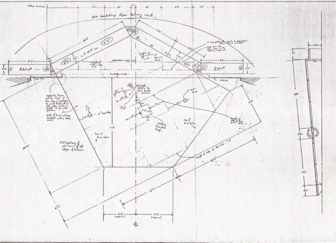
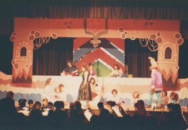

Jeffrey Lurie, AIA, LEED AP, Registered Architect

I was introduced to theater in elementary school and immediately loved set design and all the back stage theater crafts. I participated in theater summer camp learning more about set design and puppets in junior high, and in high school became a set designer for the spring musical - my favorite was the Wiz. I would design and build, as well as lead others. In college I took theater arts as my minor. Below are some examples from a lighting class and sketches for a set that built for one of the main stage shows.
